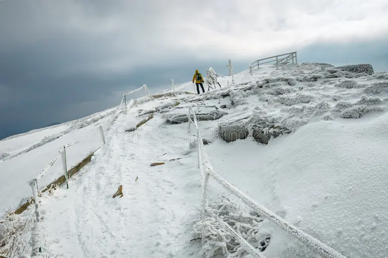
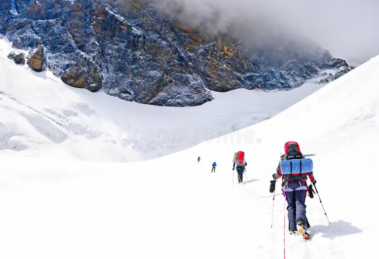
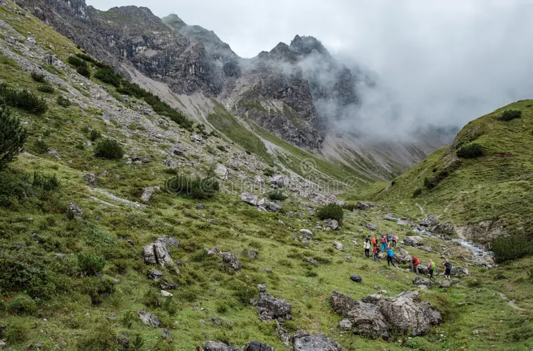
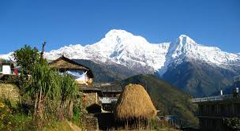
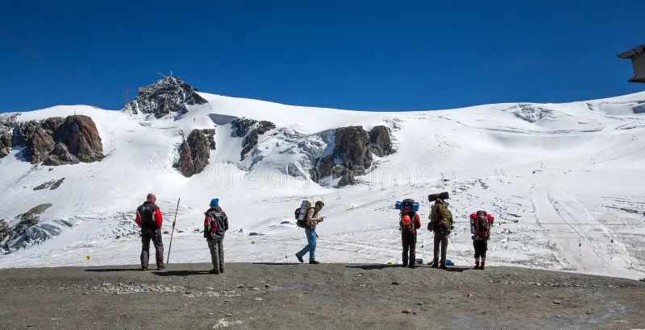
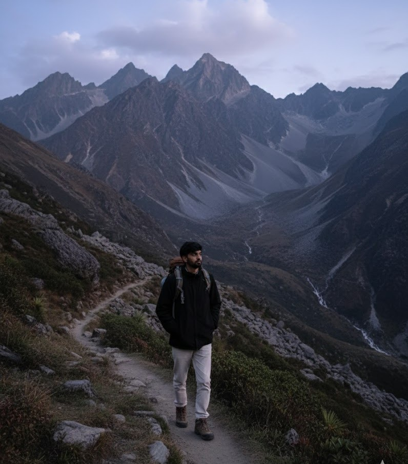
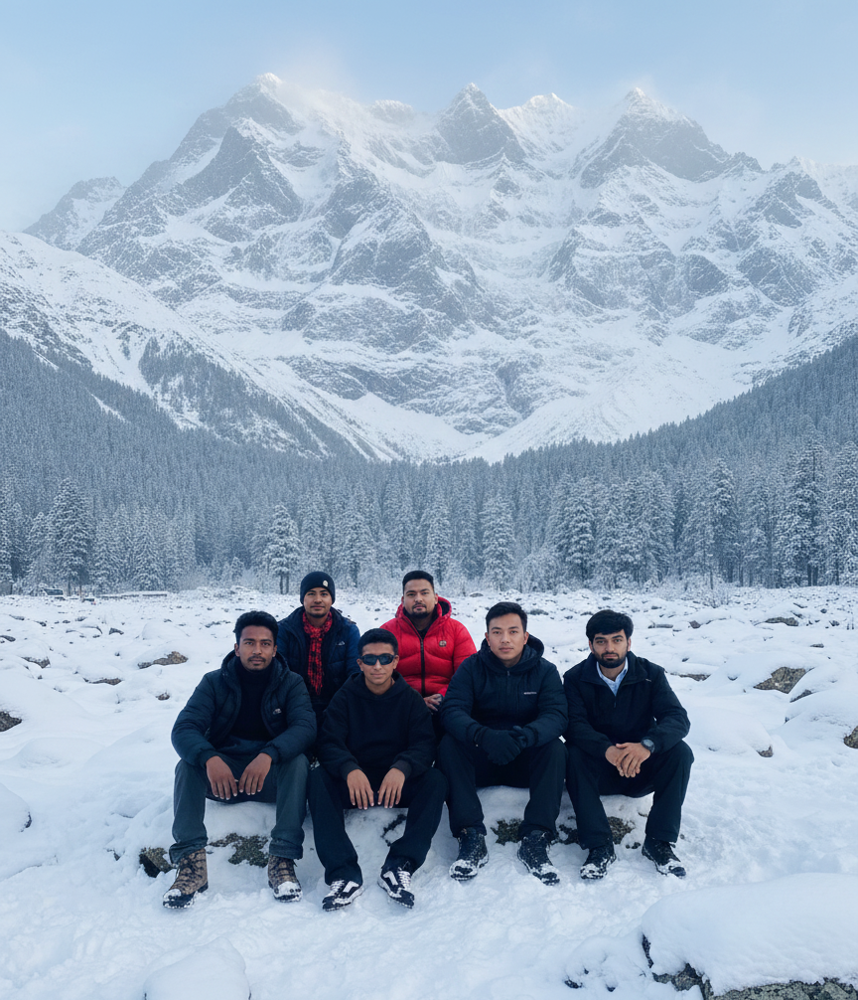

The Himalayan Hikers Club is a community dedicated to exploring the breathtaking trails and mountains of the Himalayan region. We organize monthly group hikes and extended treks, catering to all skill levels from beginner day-hikers to experienced mountaineers. Our mission is to promote responsible and safe trekking while fostering a deep appreciation for the natural beauty and local cultures we encounter. Joining our club is the perfect way to stay active, meet fellow adventurers, and discover hidden gems in the stunning terrain. We prioritize safety and sustainability in every journey.
Our most popular trek is the Ghorepani Poon Hill circuit, a four-day journey famous for its rhododendron forests and panoramic views of the Annapurna range. To see where our next adventure will take us, check out the Upcoming Treks page.






